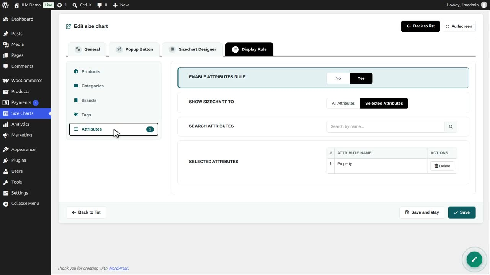
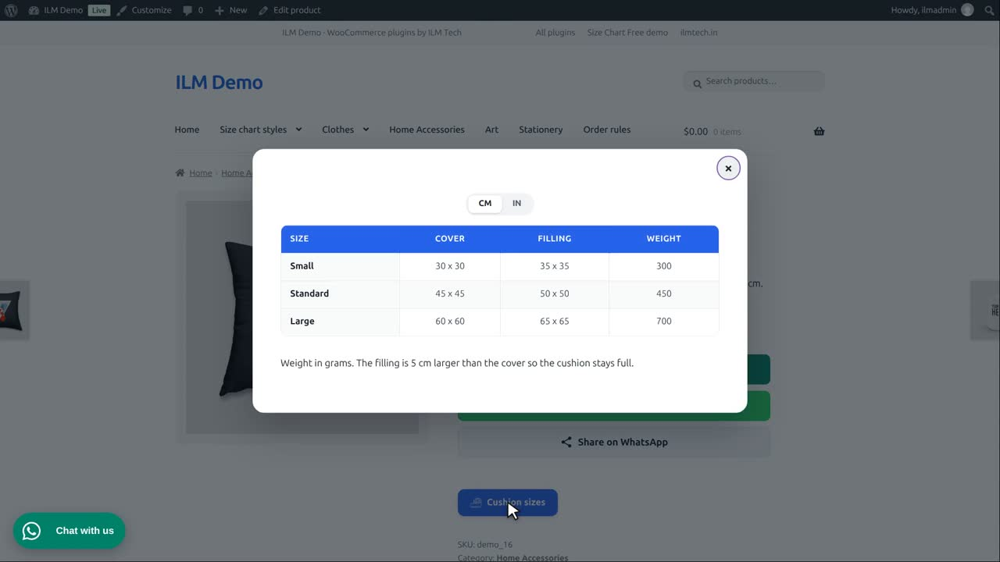

Edit the Cushion sizes chart, open Display Rule, then Attributes. The rule is on, for the attribute Property.

Every product that uses this global attribute shows the chart. Search and click to add more attributes.
In the shop, the Brown bear cushion has that attribute, so it shows the cushion sizes.

Attributes are useful when products of many categories share one type of size, like fabric or material.